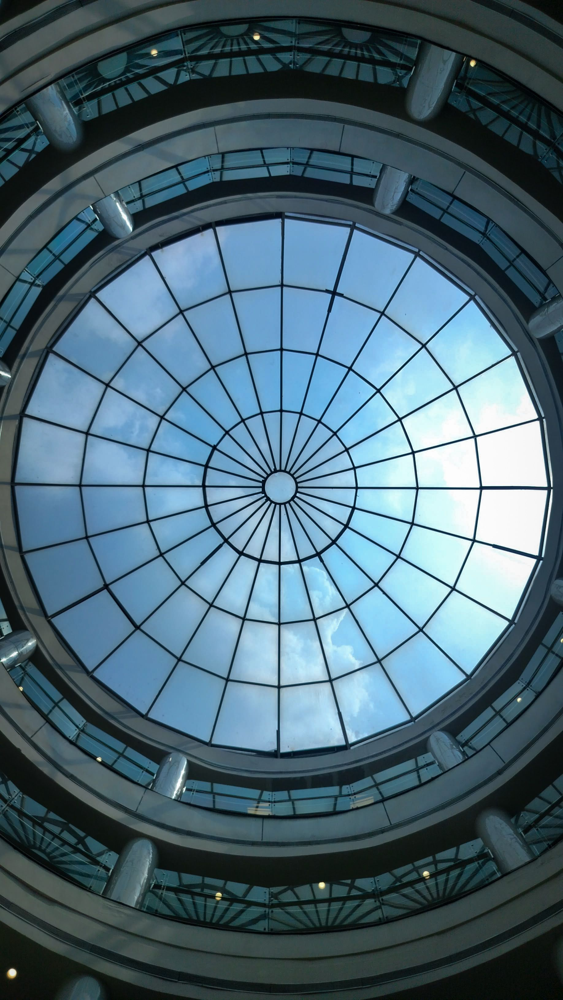
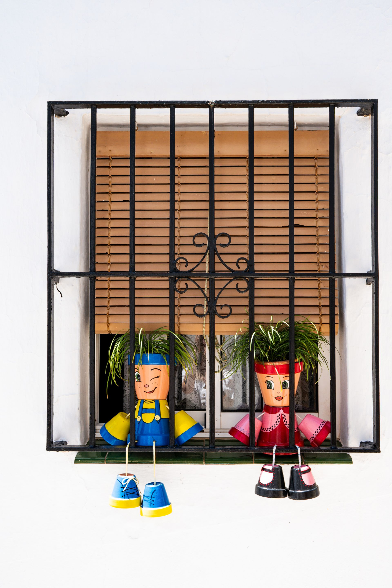

Cuidado experto para las propiedades más exclusivas
Las residencias en zonas como Altea Hills, Campomanes o Sierra Altea cuentan con grandes superficies acristaladas que definen su diseño.
Grandes Ventanales
Utilizamos técnicas que garantizan un acabado sin rastro de cal, respetando las vistas infinitas al Mediterráneo.
Cristalería de Autor
Tratamos con delicadeza vidrios especiales, barandillas de cristal y lucernarios, utilizando productos neutros que no dañan los materiales nobles de la edificación.
Máxima Discreción
Nuestro personal trabaja con el máximo respeto a la privacidad y tranquilidad de su hogar.


Limpieza de escaparates en el encanto de Altea
Desde las galerías de arte del casco antiguo hasta los restaurantes del Paseo Marítimo y el Puerto de Altea. Sabemos que la estética del pueblo blanco requiere una limpieza que mantenga la elegancia y el orden. Nos adaptamos a los accesos difíciles de las calles empedradas con equipos ligeros y eficientes.
Agua Pura para un entorno privilegiado
En una zona de gran valor natural como Altea, apostamos por la sostenibilidad.
Sistema de Agua Osmonizada
Limpiamos sin necesidad de químicos agresivos, utilizando agua filtrada que deja el cristal brillante y protegido.
Eficacia contra el Salitre
Altea sufre la humedad marina constante; nuestro método crea una barrera que retrasa la acumulación de residuos salinos en el vidrio.
30 años cuidando el patrimonio de nuestros clientes
No somos nuevos en la Marina Baixa. Durante tres décadas, hemos sido los responsables de que los negocios y hogares más emblemáticos de Altea luzcan perfectos. Nuestra veteranía nos permite asesorarle sobre la frecuencia ideal de limpieza para que su propiedad nunca pierda su valor estético.
Preguntas comunes en la zona de Altea
¿Llegáis a zonas de difícil acceso en la montaña de Altea?
Sí, contamos con vehículos equipados para acceder a urbanizaciones en zonas elevadas y herramientas telescópicas para limpiar ventanales de gran altura sin necesidad de andamios.
¿Ofrecéis limpieza de cúpulas o techos de cristal?
Somos especialistas en estructuras complejas, muy comunes en la arquitectura alteana, garantizando seguridad y resultados impecables.